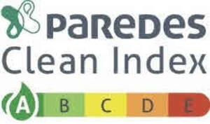

Trade Mark Journal No.2025/022 30 May 2025
UK00004173989 14 March 2025 (35,42,45)

International priority date claimed: 16 September 2024
(France)
(5082668)
- Class 35
- Assistance and advice to companies in the conduct of their business; Business auditing; Market studies; Collating of data in computer databases; Database and computer file management; Subscriptions to telecommunications database services; Collection, centralization and digitization of results of studies on the conditions under which products are manufactured and marketed, and on the environmental impact of these operations; Business information services on the environmental impact of the manufacturing and marketing of products and equipment in the health, catering, cosmetics, hygiene and professional protection, cleaning, equipment and machine maintenance, and utensils and tableware sectors; Organization of events for advertising or commercial purposes; Presentation of goods on communication media, for the sale of hygiene, cleaning and maintenance products.
- Class 42
- Scientific research and studies in the field of environmental protection and issues related to the environmental impact of industrial activities; Provision of a methodology for rating the environmental impact of product manufacturing and sales activities; Database development, hosting, maintenance and reconstitution; Engineering; Scientific Analysis and research in the field of environmental protection and, in particular, in the field of the environmental impact of product manufacturing and sales; Analysis and assessment of product quality in terms of social, climatic and environmental impact; Provision, by electronic or other means, of information tools in the field of environmental protection, in particular information on the environmental impact of the manufacture and sale of various products; Studies and analyses of the environmental impact of the manufacture and marketing of products and equipment in the health, catering, cosmetics, hygiene and professional protection, cleanliness, equipment and machine maintenance sectors, as well as utensils and tableware; Providing online technical information on products and equipment in the healthcare, catering, cosmetics, hygiene and professional protection, cleaning, equipment and machine maintenance, and utensils and tableware sectors in terms of environmental impact; Product and service certification; Quality control.
- Class 45
- Exploitation of intellectual property rights and copyright through licensing.
GROUPE PAREDES ORAPI
Representative: Wynne-Jones IP Limited